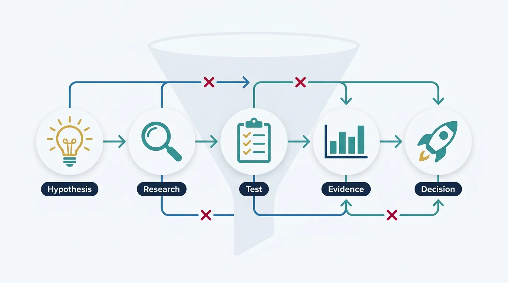
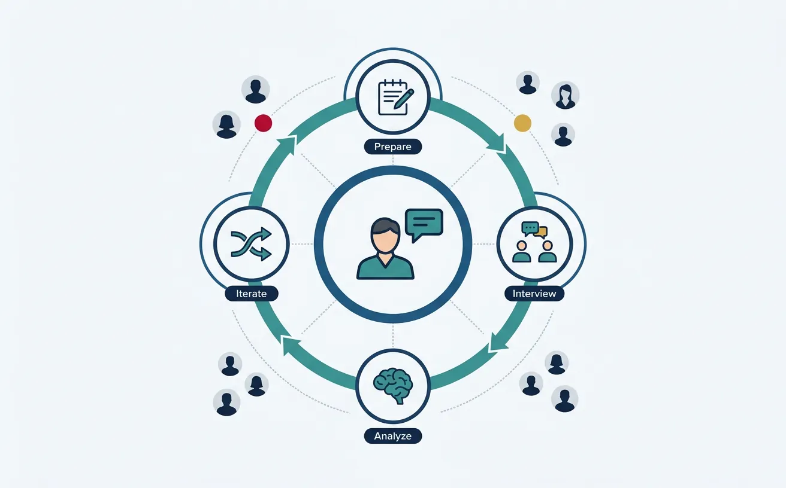
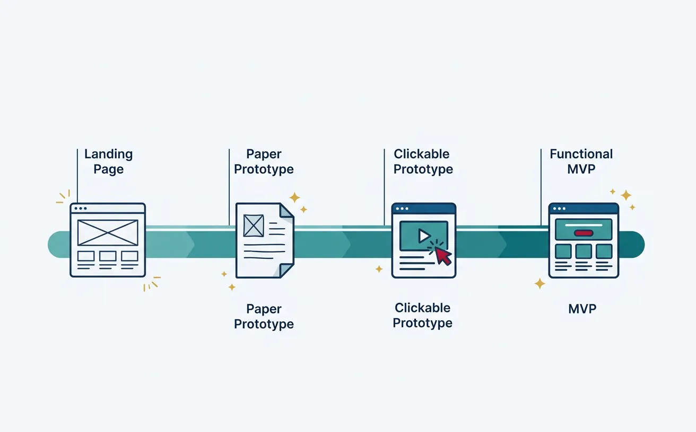
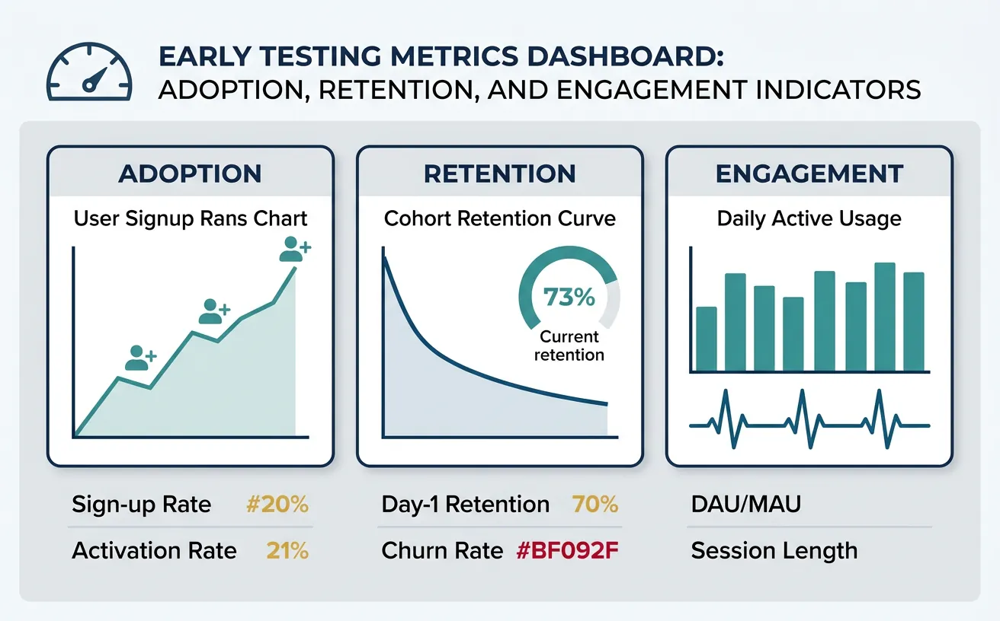
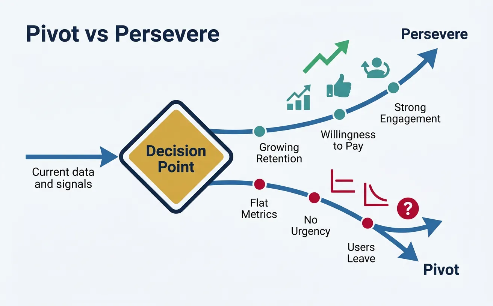

1. Introduction
Ideas are cheap—execution is everything. Before investing months or years into building a product, you need to validate that real customers will pay for your solution. This guide covers the essential techniques for testing your assumptions quickly and cheaply.

Complete Startup Journey
Ideation & Opportunity Recognition
Problem discovery, market gaps, idea generation frameworksIdea Validation & MVP Prototyping
Customer discovery, landing pages, prototype testingBusiness Models & Canvas
BMC, lean canvas, revenue models, value propositionsLean Startup Methodology
Build-measure-learn, pivoting, validated learningFundraising & Financial Modeling
VC, angels, SAFE notes, cap tables, financial projectionsBuilding Your Founding Team
Co-founder selection, equity splits, team dynamicsHiring & Company Culture
Recruiting, culture building, OKRs, team scalingScaling Operations & Growth Hacking
Growth loops, viral mechanics, operational scalingMarketing Campaigns & Digital Growth
CAC/LTV, digital marketing, positioning, channelsLegal, Financial & Risk Foundations
Entity structure, IP, compliance, burn rate managementData-Driven Decision Making
SaaS metrics, NPS, analytics dashboards, A/B testingExit Strategies & Investor Pitches
Valuations, pitch decks, M&A, IPO preparationStartup Ecosystem & Networking
Accelerators, mentors, communities, ecosystem mappingInnovation, Technology & Future Trends
Emerging tech, AI/ML, deep tech, future marketsCapstone Projects & Portfolio
Comprehensive startup plan, portfolio presentation2. Customer Discovery
Customer discovery is the process of systematically talking to potential users to understand their problems, needs, and behaviors. It's the foundation of everything that follows.

"Get out of the building." No amount of brainstorming in a conference room replaces direct conversations with real customers.
Customer Interviews
The most valuable validation tool is a well-conducted customer interview. Your goal isn't to pitch—it's to learn.
The Mom Test (Rob Fitzpatrick)
Your mom will lie to you about your business idea because she loves you. Other people will lie too—out of politeness. The solution: ask questions that even your mom can't lie about.
| ❌ Bad Question | ✅ Good Question | Why It's Better |
|---|---|---|
| "Would you use an app that does X?" | "How do you currently handle X?" | Past behavior > future intentions |
| "Do you think this is a good idea?" | "When did you last face this problem?" | Specific events > general opinions |
| "Would you pay $10/month for this?" | "How much do you currently spend on solutions?" | Real spending > hypothetical |
| "Is this feature important?" | "Walk me through how you handled this last week" | Stories reveal true priorities |
Interview Structure Template
CUSTOMER INTERVIEW GUIDE (30-45 minutes)
1. CONTEXT SETTING (5 min)
"Thanks for taking time. I'm exploring [domain] and want to understand
how people like you handle [problem area]. There are no wrong answers—
I'm here to learn, not sell."
2. THEIR WORLD (10 min)
• "Tell me about your role and what you're responsible for."
• "What does a typical day/week look like?"
• "What are the biggest challenges you face with [area]?"
3. THE PROBLEM (10 min)
• "When did you last deal with [problem]? Walk me through what happened."
• "What solutions have you tried? What worked? What didn't?"
• "How much time/money does this problem cost you?"
• "How often does this come up?"
4. CURRENT SOLUTIONS (10 min)
• "How do you handle this today?"
• "What's frustrating about the current approach?"
• "Have you looked for alternatives? What happened?"
• "If you could wave a magic wand, what would you change?"
5. WRAP-UP (5 min)
• "Is there anything else I should have asked?"
• "Who else should I talk to about this?"
• "Can I follow up if I have more questions?"
POST-INTERVIEW: Document immediately while fresh!How Many Interviews?
Aim for 15-30 interviews per customer segment. You'll notice patterns emerging around interview #10-12. Keep going until you hear the same themes repeated—that's "saturation."
Surveys
Surveys help you quantify what you've learned from interviews and reach larger samples. But surveys without prior interviews often ask the wrong questions.
Survey Best Practices
- Keep it short: 5-10 minutes max. Completion rates drop dramatically after that.
- One topic per question: Avoid "and/or" constructions.
- Avoid leading questions: "How satisfied are you with our great service?" → Biased.
- Include behavioral questions: "In the past month, how many times did you..." is better than "How often do you..."
- Offer incentives wisely: Small incentives improve response rates without attracting professional survey-takers.
Sample Question Types
| Type | Use Case | Example |
|---|---|---|
| Multiple Choice | Easy to analyze, segment | "Which best describes your role?" |
| Likert Scale | Measure intensity, satisfaction | "1-5: How satisfied are you with..." |
| NPS (0-10) | Loyalty, word-of-mouth potential | "How likely are you to recommend..." |
| Open-ended | Discover unknown unknowns | "What's the biggest challenge with..." |
Observational Studies
Sometimes customers can't articulate their problems or they behave differently than they claim. Observation fills the gap.
Observation Techniques
- Fly-on-the-wall: Watch without interacting. Notice what frustrates, confuses, or takes too long.
- Contextual inquiry: Watch and ask. "I noticed you did X—what were you thinking?"
- Day-in-the-life: Shadow someone through their workflow to understand the full context.
- Usability testing: Give someone a task and observe where they struggle.
Exercise: Observation Session
Find someone willing to let you watch them do a task related to your problem space. During 30 minutes of observation, document:
- What tools do they use? (software, spreadsheets, paper)
- What shortcuts or workarounds have they created?
- Where do they hesitate, backtrack, or get frustrated?
- What do they complain about or wish was easier?
3. Market Sizing (TAM/SAM/SOM)
Investors and strategic planning require you to estimate market size. The TAM/SAM/SOM framework provides a structured way to think about your opportunity.
Total Addressable Market (TAM)
TAM is the total revenue opportunity if you achieved 100% market share with your product category. It's the theoretical ceiling.
Calculation Methods
Top-Down Approach: Start with industry reports and narrow down.
Example: Online Education Platform
Global education market: $6.3 trillion
× % that's online/digital: × 15%
= Online education TAM: ~$945 billionBottom-Up Approach: More accurate—build from unit economics.
Example: B2B SaaS for Dentists
# of dentists in the US: 200,000
× % that would use software: × 70%
= Potential customers: 140,000
× Annual subscription: × $2,400
= TAM: $336 millionServiceable Addressable Market (SAM)
SAM is the portion of TAM you can realistically target based on your product's capabilities, geography, and focus.
Continuing the dentist example:
TAM (all US dentists): $336 million
But we only serve:
× Solo/small practices (80%): × 0.80
× Initially US-only: × 1.00
× Premium tier only: × 0.30
= SAM: ~$80 millionServiceable Obtainable Market (SOM)
SOM is what you can realistically capture in the near term (1-3 years) given your resources and competition.
SAM: $80 million
Realistic market share (5%): × 0.05
= SOM (Year 3 target): $4 million ARR• TAM: $1B+ (venture-scale opportunity)
• SAM: $100M-$500M (room to grow, not too diffuse)
• SOM: $1M-$10M in 3 years (ambitious but credible)
graph TD
TAM["TAM
Total Addressable Market
Everyone who could buy"]
SAM["SAM
Serviceable Addressable Market
Your segment / geography"]
SOM["SOM
Serviceable Obtainable Market
Realistic capture (1-5 years)"]
TAM -->|"Filter by segment"| SAM
SAM -->|"Filter by capacity
& competition"| SOM
TD["Top-Down
Industry reports → %"] -.-> TAM
BU["Bottom-Up
Units × Price × Customers"] -.-> SOM
style TAM fill:#132440,stroke:#132440,color:#fff
style SAM fill:#16476A,stroke:#132440,color:#fff
style SOM fill:#3B9797,stroke:#132440,color:#fff
Enter your market data below to calculate TAM, SAM, and SOM. Download as Word, Excel, or PDF for your pitch deck.
All data stays in your browser. Nothing is sent to or stored on any server.
4. Competitor Analysis
"No competition" is a red flag, not a selling point. Either the market doesn't exist, or you haven't looked hard enough. Understanding competitors helps you position effectively.
SWOT Analysis
A classic framework for understanding your competitive position:
┌─────────────────────────────┬─────────────────────────────┐
│ STRENGTHS │ WEAKNESSES │
│ (Internal) │ (Internal) │
├─────────────────────────────┼─────────────────────────────┤
│ • What do we do well? │ • What do we lack? │
│ • What resources do we │ • What do competitors do │
│ have? (team, tech, IP) │ better? │
│ • What's our unfair │ • Where are we resource- │
│ advantage? │ constrained? │
├─────────────────────────────┼─────────────────────────────┤
│ OPPORTUNITIES │ THREATS │
│ (External) │ (External) │
├─────────────────────────────┼─────────────────────────────┤
│ • What trends favor us? │ • What could hurt us? │
│ • What gaps exist in │ • What are competitors │
│ the market? │ planning? │
│ • What underserved │ • What regulation might │
│ segments exist? │ impact us? │
└─────────────────────────────┴─────────────────────────────┘Competitive Benchmarking
Map competitors across key dimensions:
| Competitor | Target Customer | Pricing | Key Features | Weakness |
|---|---|---|---|---|
| Competitor A | Enterprise | $500/mo | Full suite, integrations | Complex, slow |
| Competitor B | SMB | $50/mo | Simple, fast | Limited features |
| Competitor C | Prosumer | Free + $20 | Modern UX | No support |
| Us | Mid-market | $150/mo | Balance: power + simplicity | New, unproven |
Competitive Positioning
Position yourself on dimensions that matter to your target customers:
PRICE
Low ──────────── High
│ │
Simple ───┼────B────┼─── Complex
│ ↑ │
FEATURE │ "OUR │
SET │ SPACE" │
│ ↓ │
Powerful ─┼────A────┼─── Enterprise
│ C │
└─────────┘
A = Full-featured enterprise (SAP, Salesforce)
B = Simple SMB (Basecamp, Wave)
C = Freemium prosumer (Notion, Canva)
"OUR SPACE" = Underserved mid-marketFill in the 4 quadrants and strategic actions. Download as Word, Excel, or PDF.
All data stays in your browser. Nothing is sent to or stored on any server.
5. MVP Design & Prototyping
The Minimum Viable Product is the smallest thing you can build to learn whether customers want your solution. It's not about building something crappy—it's about learning fast.

"If you're not embarrassed by the first version of your product, you've launched too late."
MVP Types by Effort Level
| MVP Type | Effort | Best For | Example |
|---|---|---|---|
| Fake Door / Smoke Test | Hours | Testing demand | Landing page with "Sign Up" button |
| Explainer Video | Days | Complex concepts | Dropbox's famous demo video |
| Concierge MVP | Days-Weeks | Service validation | Manually deliver what software would automate |
| Wizard of Oz | Weeks | UX validation | Looks automated, humans behind the scenes |
| Piecemeal MVP | Weeks | Integration plays | Combine existing tools (Zapier, Airtable, etc.) |
| Single-Feature MVP | Weeks-Months | Core value test | One feature that solves the main problem |
Case Study: Zappos Wizard of Oz
Nick Swinmurn wanted to test if people would buy shoes online (1999—this wasn't obvious).
The MVP: He took photos of shoes at local stores, posted them on a website. When someone ordered, he'd go buy the shoes at retail and ship them (losing money on each sale).
What he learned: Yes, people will buy shoes online without trying them on first.
Result: Zappos sold to Amazon for $1.2 billion.
MVP Design Principles
- Start with the riskiest assumption: What's the biggest "leap of faith" in your business model? Test that first.
- Define success criteria upfront: "If X% of visitors sign up, we'll proceed."
- Build only what's necessary to learn: Every feature without a learning goal is waste.
- Make it real enough to get real reactions: People respond differently to mockups vs. working products.
- Plan for iteration: The first MVP is just the beginning. Build to learn, then improve.
6. Early Testing Metrics
What you measure depends on what you're trying to learn. Early-stage metrics focus on customer behavior, not revenue.

Adoption Metrics
- Sign-up rate: % of visitors who create accounts
- Activation rate: % of sign-ups who complete key action (e.g., first project created)
- Time to value: How long until users experience the "aha moment"
Retention Metrics
- Day 1/7/30 retention: % of users who return
- Weekly active users (WAU): Consistent engagement signal
- Cohort retention curves: Do curves flatten (good) or decline to zero (bad)?
Healthy Retention Curve Unhealthy Retention Curve
100% ● 100% ●
│ ● │ ●
50% │ ● ● ─ ● ─ ● ─ ● │ ●
│ │ ●
0% └──────────────────── 0% └───────●─●─●─●─
Week 1 2 3 4 5 6 Week 1 2 3 4 5 6
Stabilizes = Product Declines to zero =
Market Fit signal No PMF, fix productWillingness to Pay
The ultimate validation: will people pay?
- Pre-order conversions: Landing page → credit card = strong signal
- Letter of Intent (LOI): B2B prospects commit in writing
- Freemium → Paid conversion: Even small conversions validate value
- Pilot program sign-ups: Companies willing to invest time = value indicator
Downloads, page views, registered users, and social followers feel good but don't prove product-market fit. Focus on engagement and revenue metrics instead.
7. Pivot vs Persevere Decisions
At some point, your data will force a decision: double down on your current approach or change direction. This is one of the hardest calls in entrepreneurship.

Signs You Should Pivot
- Retention curves decline to zero (users try but don't return)
- After 20+ customer interviews, problem doesn't feel urgent
- Customers love it but won't pay (nice-to-have, not must-have)
- You've run multiple experiments with no improvement
- A different customer segment is more excited than your target
Signs You Should Persevere
- Retention curves flatten (some users love it and stay)
- Customers say "I'd be upset if this went away"
- Word-of-mouth is driving new users
- Engagement metrics are improving with iterations
- The problem is clearly validated; execution is the issue
Types of Pivots
| Pivot Type | What Changes | Example |
|---|---|---|
| Zoom-in | One feature becomes the whole product | Flickr started as a game; photo-sharing became the product |
| Zoom-out | Product becomes one feature of larger offering | Single tool → Full suite |
| Customer segment | Same product, different customers | B2C → B2B (same software, different buyers) |
| Problem | Same customer, different problem | Realized customers' real pain was elsewhere |
| Channel | Different go-to-market approach | Direct sales → Self-serve SaaS |
| Technology | Same problem, new technical approach | Mobile app → Web platform |
8. Hands-On: Build Your First MVP
Let's put theory into practice with a concrete exercise.
MVP Sprint: One Week Challenge
Day 1 - Define Your Hypothesis:
- Write your riskiest assumption: "We believe [customer] will [action] because [reason]"
- Define success criteria: "We'll proceed if [X]% of [Y] do [Z]"
Day 2 - Design Your Test:
- Choose MVP type: Landing page? Concierge? Prototype?
- Sketch your MVP (paper is fine)
- List exactly what you'll build/fake
Day 3-4 - Build:
- Create landing page (Carrd, Webflow, or simple HTML)
- Write compelling copy focused on the problem
- Add sign-up form or "Notify Me" button
- Set up analytics (Google Analytics, Hotjar)
Day 5 - Launch & Learn:
- Share with 50+ potential customers (social media, communities, direct outreach)
- Track: visits, sign-ups, feedback
- Document what you learned
No-Code MVP Tools
| Category | Free Tools | Paid Tools |
|---|---|---|
| Landing Pages | Carrd, Google Sites | Webflow, Unbounce, Leadpages |
| Forms/Surveys | Google Forms, Tally | Typeform, SurveyMonkey |
| Databases | Airtable (free tier), Notion | Airtable Pro, Coda |
| Automation | Zapier (free tier), Make | Zapier Pro, n8n |
| Prototypes | Figma (free) | Figma Pro, InVision |
| Payments | Stripe (per transaction) | Gumroad, Lemon Squeezy |
9. Conclusion & Next Steps
With a validated idea and working MVP, you're ready to formalize your business model and understand the economics of your venture.